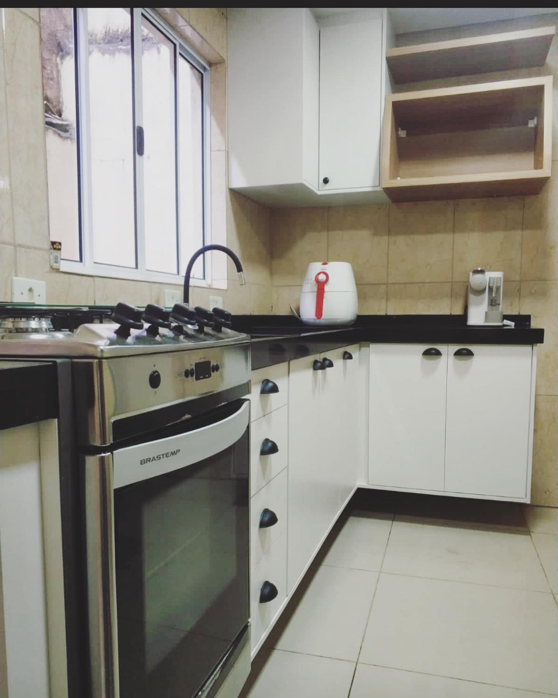

Os móveis planejados são desenvolvidos a partir de "modelos prontos", mas que podem ser personalizados, tanto nas medidas das peças, como nos acabamentos (puxadores e cores, por exemplo).
Sua produção é feita de acordo com o gosto do cliente, por isso eles são feitos seguindo as medidas exatas de cada ambiente. Pode-se dizer que se trata de um projeto customizado ao que o cliente deseja, já que também oferece essa possibilidade de personalizar alguns detalhes.
Nos móveis planejados, o planejamento é detalhado: cada centímetro do espaço é medido. Assim, a grande vantagem está no fato de que os móveis otimizam o espaço e proporcionam mais beleza ao ambiente.
Muitas pessoas consideram a solução de móveis planejados custosa. De fato, esse tipo de projeto pode parecer mais caro à primeira vista, mas os benefícios compensam — e muito! — o investimento. Por serem peças pensadas para um espaço específico, é possível baratear o processo de maneira inteligente.
| |
 | ||
Armário aéreo com portas de vidro e
|
Gabinete para pia de cozinha em
|
Nincho para banheiro. |
Balcão 3 portas com nincho para
|
Armário gabinete para banheiro. |
Rack com gavetas para sala. |
Escrivaninha com gavetas para home
|
Cozinha completa:balcão, armários aéreos
|
Viver em um lar com tudo o que a gente sempre quis e do |
Pensou móveis planejados, pensou PLAM MARCENARIA. Aqui a gente dá o nosso melhor para que sua casa fique do jeitinho que sempre sonhou. Trabalhamos com preço justo e os melhores materiais para te deixar realizado. Entre em contato e vamos marcar uma reunião!
Desenvolvido por Geovana Perazzo - 2023